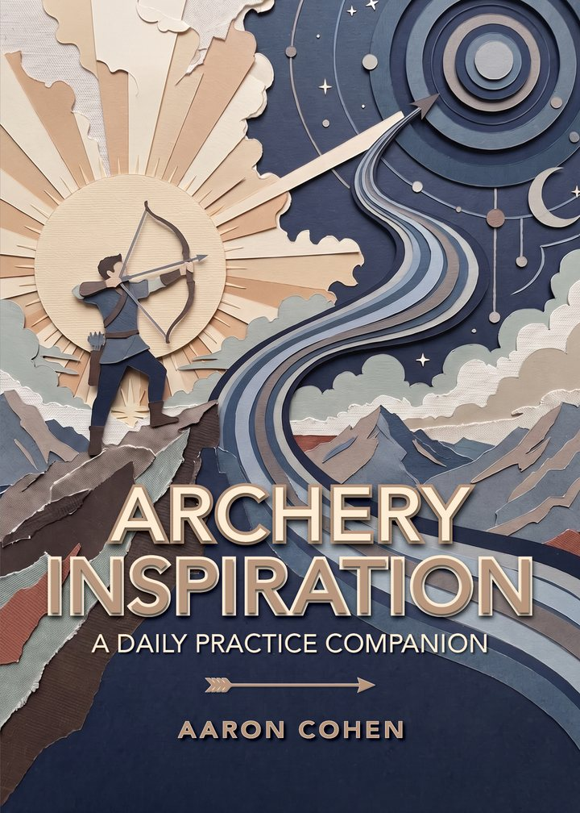
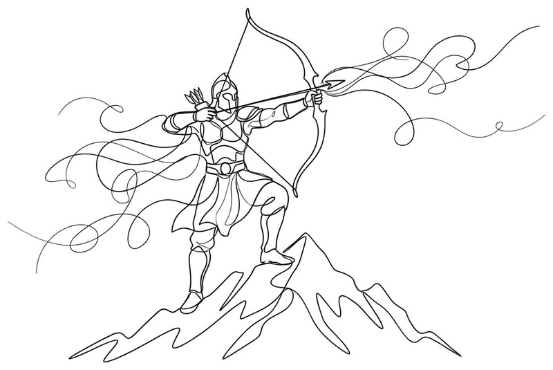
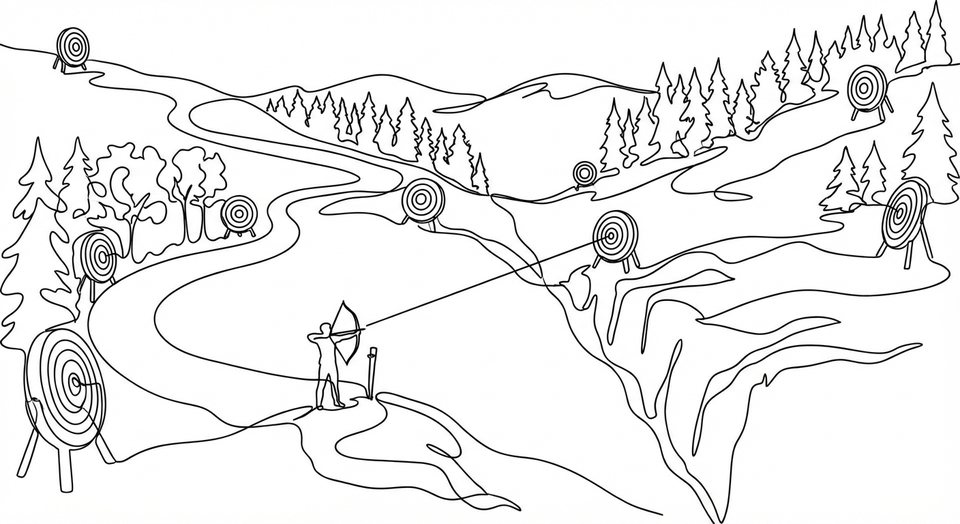
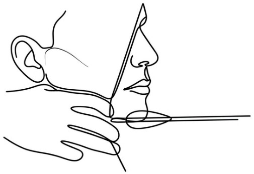
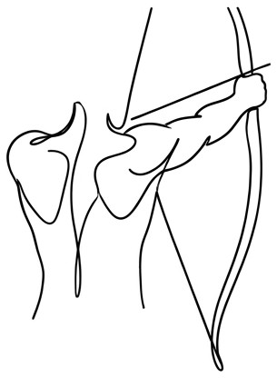
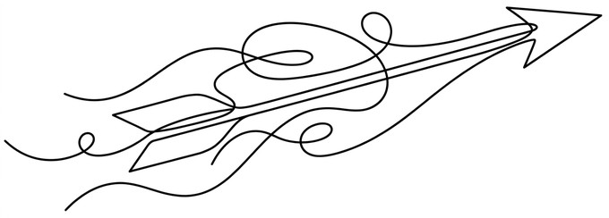
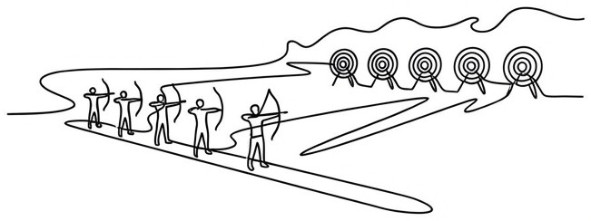
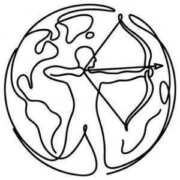
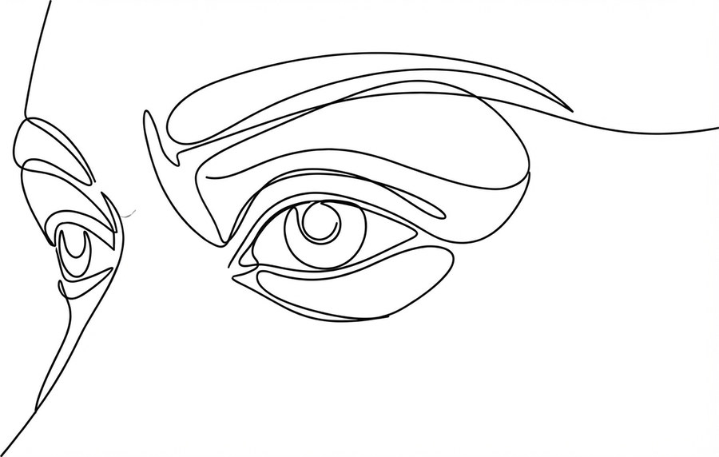
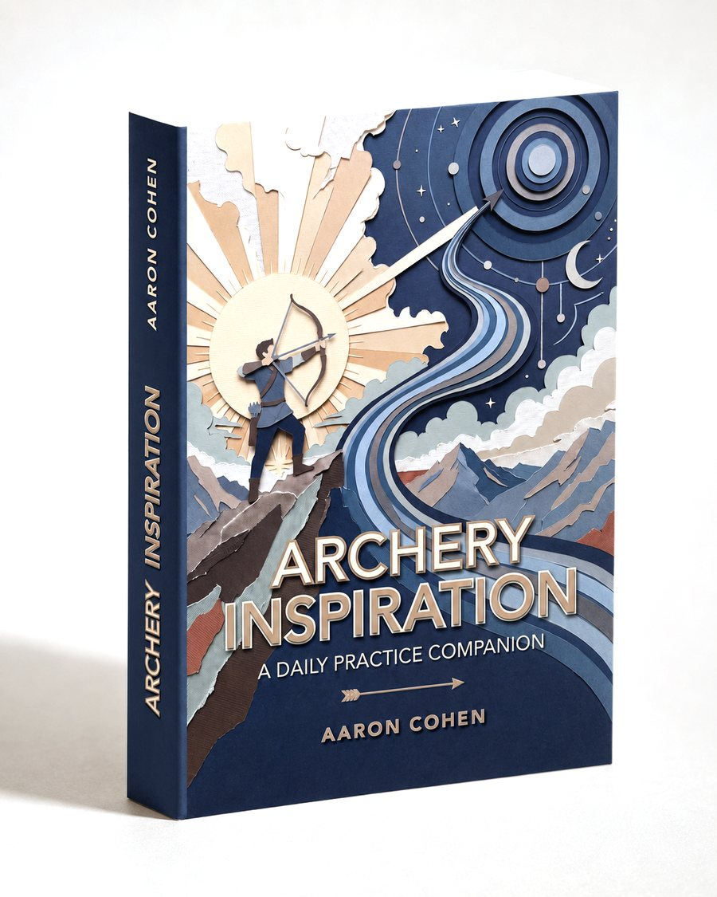

Entries from the book

Out now
Archery Inspiration · Aaron CohenA Daily Practice Companion
Three hundred and sixty-five entries, one for each day of the year. A quotation, a short reflection, a question or two, and a drawing. For archers of every style, and for readers who have never drawn a bow.
Where to buyProceeds support Pīkoi Archery, a youth archery program on Kauaʻi.
Open it anywhere
Every walk to the range connects you to something thousands of years old and as current as the physics of your last shot. Archery Inspiration is a daily companion that sets your mind on those connections and sparks your drive to practice.
Inside are 365 entries that are varied on purpose. One page might sit you down with a piece of the sport's history. The next might open up the physics of an arrow in flight. Every page has the same rhythm: a quotation worth holding onto, some facts or ideas, and a question or two to consider.
There is no table of contents and no right order. Open it anywhere, sit with the page, and let it draw you to the range.
June 9

“You give but little when you give of your possessions. It is when you give of yourself that you truly give.”
Kahlil Gibran
In Persian legend, a long war between Persia and Turan ended not with a battle but with a single arrow. Both sides agreed that wherever the arrow fell, there the border would lie. The finest archer in the land, Arash, was asked to shoot it. He climbed Mount Damavand at dawn. In many versions of the story, he poured not only his strength but his entire life into the draw. A divine wind carried the arrow from dawn until noon. It lodged in a walnut tree on the far bank of the Oxus river, fixing a frontier that held for centuries. Arash fell dead the instant he released the arrow. The midsummer festival of Tirgan still honors him each year. The Persian word for arrow, tir, lives on in its name.
What is the most of yourself that you have ever put into a single shot?
December 2

“Come forth into the light of things, let nature be your teacher.”
William Wordsworth
The World Archery Federation defines field archery as the discipline of shooting at stationary circular targets of different sizes set at varying distances, heights and angles around a course of natural terrain. Imagine the variety of field archery courses around the world. In the San Francisco Bay Area alone, there are about six such courses certified by the National Field Archery Association. Since courses exist in every type of geography, archery becomes a passport to visit places near and far. The special challenge of shooting uphill, across a ravine, or off a cliff awaits you.
What is the best field archery course that is near to you? Could you create something like a field archery course even closer? Can you make a plan to visit one somewhere far away?
See it
A look at the printed book
August 27

“Keep your mouth shut and your eyes open.”
Samuel Palmer
Most experts seek bone-on-bone alignment in archery. This applies to your teeth as well. To be consistent, close your mouth and clench your teeth gently while shooting. Your jaw cannot shift if it is clenched. If your mouth is not in the same position each time, any anchor point around it moves. An open mouth lowers the jaw, which lowers your anchor point. While this can act as an adjustment, it is difficult to judge exactly how wide to open your mouth. It is safer to just close it.
Do you clench your teeth at all when you shoot? Does your anchor point feel more solid when your jaw is closed?
June 19

“It is not the load that breaks you down, it is the way you carry it.”
Lena Horne
Imagine the position of your bow arm shoulder relative to your chin at your full draw. It is easy to ignore this aspect and simply let that shoulder settle into place wherever it ends up during your shot process. If the shoulder rides too high or pushes back too far, it can become impinged. Consciously lowering it into a more open position frees the scapula, like releasing a drawer that has been jammed in its frame. This creates a more fluid motion and is safer for your shoulder in the long run.
Do you consciously check the height of your bow arm shoulder before you draw? Have you ever felt a pinch that suggested your shoulder was in the wrong position?
April 28

“A certain amount of opposition is a great help. Kites rise against, not with the wind. Even a head wind is better than nothing.”
John Neal
The arrow cutting through air is a study in tradeoffs. The point, the shaft, and the fletching all create aerodynamic drag. A longer, sharper point lets the shaft slip through air resistance more cleanly. The cumulative effect of small reductions in drag makes an arrow that carries its energy further and truer. Ironically, a thicker shaft's higher aerodynamic profile still has a better chance of cutting the edge of a higher-scoring ring on the archery target. Suddenly the arrow that flies less well can be the better scorer. Choosing arrows is more than just physics when you think about the game.
Do you optimize your arrows for how they fly or how they score? How do you choose your arrows?
July 25

“To the Grand National Society, in the first instance, is this great increase in skill mainly owing, but beyond this, increased skill has led to increased taste and liking for the amusement.”
1902 Encyclopedia, Archery
Archery is at its core a solitary sport. Just a person, a bow, an arrow, and a target. Inevitably, when people have a pursuit they genuinely care about, a community assembles itself. The range fills up on a weekend morning before anyone has officially organized anything. A community can start just with that. World Archery stands as the international federation for the Olympic sport which combines the national federations from across the globe. It provides common standards and a common stage. From that international summit down to a loose circle of friends on a shared target, archery draws people together.
Is there an archery organization worth exploring that you have not discovered yet?

Something to support
Pīkoi Archery
Pīkoi Archery is a youth archery program. The idea is simple: any kid who wants to try archery should be able to. It does not require much to help a kid aim a blunt arrow at plastic cones on the grass. A lifetime of archery can begin just that way.
The name comes from Pīkoiakaʻalalā, the legendary archer of Kauaʻi, whose story appears in the book. The name of Pīkoiakaʻalalā has been absent from archery for too long before this effort. This is the first living archery program to bring forward this legend for many years. Perhaps someday there will be a real public archery range with his name, with this book part of making that happen.

The Author
Aaron Cohen
Aaron Cohen is a high school senior in San Jose, California. He does archery for the focus and the quiet the sport gives him. Archery Inspiration grew out of his deep interest in how far the sport reaches. He plans to study physics in college. Off the range, he reads, swims, and bikes.
In Aaron's own words, he is still a student of this, definitely not a master at all.
The printed book
